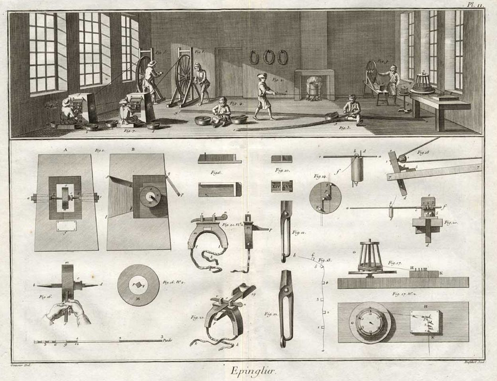

In the first chapter of The Wealth of Nations (1776), Adam Smith describes a pin factory. A single untrained worker, working alone, could not make twenty pins a day, perhaps not one. But with the division of labor, ten workers each specializing in one of the eighteen distinct operations required to produce a pin can produce 48,000 pins per day. Smith's arithmetic is famous: specialization produces an almost unimaginable increase in productive output. This observation forms the foundation of classical economics and, through it, of the modern industrial economy.

But Smith himself was troubled by one implication of his observation. The worker who spends her entire working life performing one of eighteen pin operations becomes, he acknowledged elsewhere in the same book, "as stupid and ignorant as it is possible for a human creature to become." Her cognitive and moral faculties atrophy from disuse. The social benefit of specialization is bought at a real cost to the individual workers whose specialization makes it possible. This tension between social efficiency and individual flourishing runs through every serious treatment of the division of labor, from Smith and Durkheim to the present.
Smith's account of the division of labor is primarily economic. Specialization increases productivity because workers become more skilled at their narrow task through repetition, time is saved by not switching between tasks, and specialized workers more readily develop or adopt specialized tools for their particular task. The market mechanism coordinates the specialized activities of millions of individuals without any central planner, through the price system. The result is an unintended order, what Smith calls in a famous phrase the "invisible hand," that serves the general welfare even though each individual is pursuing only his own interest.
Smith is deeply aware, however, that this economic efficiency comes with social costs. The division of mental labor between those who plan and design and those who execute produces a class of workers whose intellectual capacities are systematically underdeveloped. Smith's remedy was public education, on the model of the Scottish parish schools he cites (Wealth of Nations V.1). The state should counteract the intellectual effects of the division of labor by providing the general education that the market does not incentivize.
The pin factory is not a parable. Smith says he saw one. “I have seen a small manufactory of this kind, where ten men only were employed, and where some of them consequently performed two or three distinct operations. But though they were very poor, and therefore but indifferently accommodated with the necessary machinery, they could, when they exerted themselves, make among them about twelve pounds of pins in a day.” At upwards of four thousand pins to the pound, that is “upwards of forty-eight thousand pins in a day,” or about 4,800 per man, against the “twenty, perhaps not one pin in a day” he thinks an untrained worker could manage alone.
The ten men are the only people in the chapter Smith claims to have observed directly, and he does not say where or when. Everything else in the argument is inference from this one workshop and from the general fact of separated trades. Durkheim will ask a different question of the same ten men: what did the arrangement do to them?
Durkheim's account of the division of labor, as this course has already noted in connection with organic solidarity in Week 4, is primarily sociological. He is not primarily interested in its effects on productivity but in its effects on social cohesion. A well-functioning division of labor, in which each worker understands the social function her work serves and feels morally connected to the larger social whole of which it is a part, is a source of social solidarity. A pathological division of labor, either anomic or forced, is a source of social fragmentation and alienation. The goal of social policy, in Durkheim's view, is not simply to maximize economic output but to ensure that the division of labor produces genuine organic solidarity rather than mere mechanical interdependence without normative content.
| Smith | Durkheim | |
|---|---|---|
| Unit of analysis | The individual worker's output. | The structure of the whole society. |
| What can go wrong | Intellectual and moral atrophy in the worker. | Anomic or forced division of labor. |
| Proposed remedy | Public education, funded by the state. | Roles assigned by genuine talent, with each worker holding a normative sense of function. |
| What counts as success | Rising output per worker. | Genuine organic solidarity, not merely interdependence. |
▶ In your notebook, name one thing a purely economic measure of a society's division of labor could never tell you.
Specialization is not one story but two, told by two different disciplines about the same fact. Smith's story is about wealth: what a society can produce once individuals stop trying to do everything themselves. Durkheim's story is about solidarity: what holds a society of specialists together once nobody does the same work as anyone else. Neither story cancels the other. The same question, who is bound to whom and on what terms, divides Marx from Weber on social class.